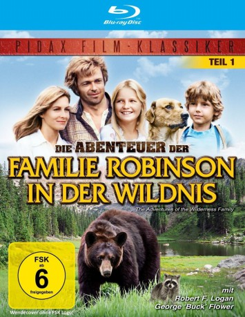

gesehen am 21.11.2016
gesehen am 21.11.2016Alternativ: The Adventures of the Wilderness Family gesehen am 21.11.2016
 
 IMDB-Wertung: 6.4 / 10
IMDB-Wertung: 6.4 / 10  Metascore:
Metascore: 
Skip Robinson und seine Frau Pat sind schon lange nicht mehr glücklich in Los Angeles. Als ihr Hausarzt empfiehlt, ihre Tochter Jenny aus gesundheitlichen Gründen aufs Land zu schicken, kaufen sie sich ein Grundstück in den Rocky Mountains und gehen mit ihr und Sohn Toby in die Berge. Nach und nach richtet sich die Familie in der ebenso schönen wie rauen Natur ein. Sie bauen ein großes Blockhaus, gehen auf die Jagd, erkunden die Umgebung und erleben zahlreiche Abenteuer.
Jahr: 1975
Dauer: 99 Minuten
FSK: 6
Land: USA Studio: Pacific International EnterprisesTonspuren: DD2.0 - ,
Untertitel:
Auflösung: 1080p (1440x1080) Größe: 5672 MB
Genre: Familie, Abenteuer, Drama
Regisseur: Stewart Raffill
Drehbuch: Paul Mayersberg
Soundtrack:
Darsteller:
 George 'Buck' Flower als Boomer
George 'Buck' Flower als BoomerDatei: X:\Kinder Collections\Familie Robinson\Abenteuer der Familie Robinson in der Wildnis, Die (1975, FSK6, 1440x1080).mkv seit 18.11.2016
Festplatte: Kinder-Filme+Trick
 Alle Filme aus Gruppe 'Kinder Collections\Familie Robinson'
Alle Filme aus Gruppe 'Kinder Collections\Familie Robinson'